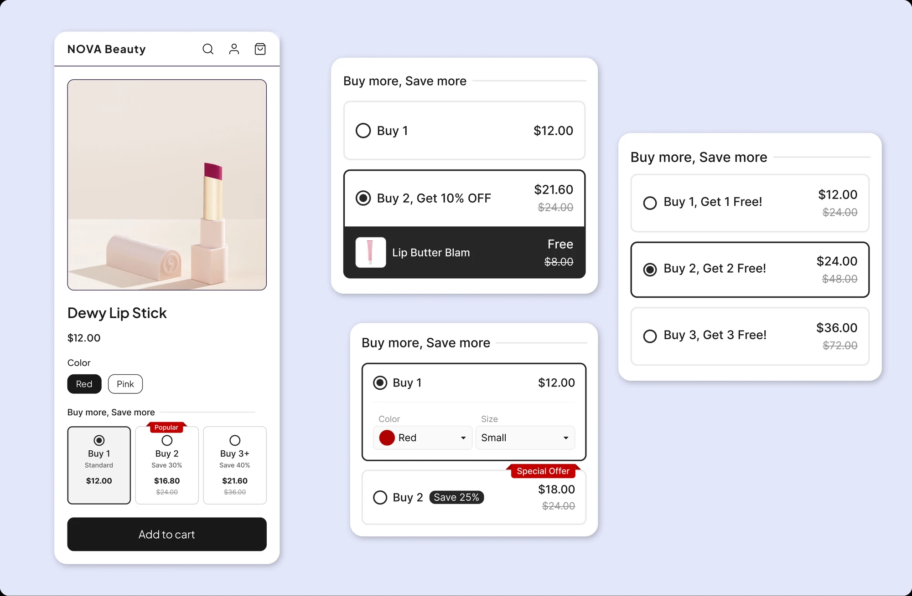

Case study 01

Fixing a Feature People Kept Giving Up On
Completion rate more than doubled
A popular feature in a Shopify app kept losing people halfway through setup. I dug into why, then redesigned it around ready-made templates instead of a blank slate. The number of people who finished setup more than doubled, and trial cancellations dropped too.
Read the case study →